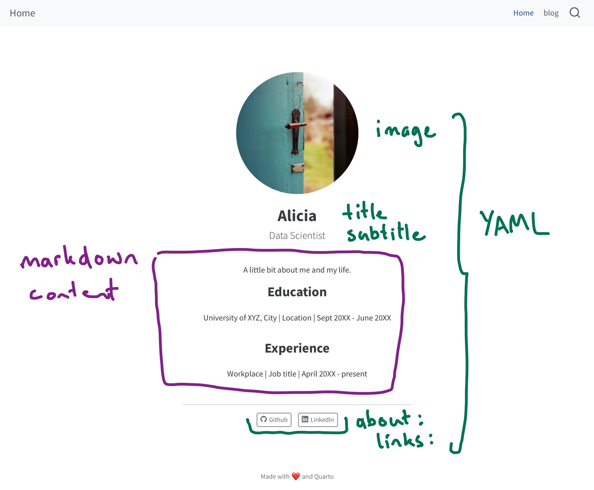

Website Basics
Start with a template
- Start somewhere logical:
- Get the website template:
Start with a template
- Follow the prompts:
Terminal
Open the folder:
RStudio: New Project > Existing Directory >
VS Code: File > Open Folder >
Open
index.qmd
Workflow
Preview. Edit. Save. Preview.
Preview
Current page
Cmd/Ctrl + Shift + K
Whole site
Build > Render Website

Requires Quarto Extension
Your Turn
Get the starter template. (On Posit Cloud? Skip this step.)
Open
index.qmdPreview
index.qmdEdit
titleandsubtitlein theindex.qmdYAML to reflect your sitePreview
What else is in
index.qmd? Can you match the contents ofindex.qmdwith contents of the webpage?
05:00
index.qmd Components
No peeking

Page Structure
index.qmd
---
title: "Alicia"
subtitle: "Data Scientist"
# `profile.jpg` photo by Jan Tinneberg on https://unsplash.com
image: profile.jpg
about: # https://quarto.org/docs/websites/website-about.html
template: jolla
links:
- icon: github
text: Github
href: https://github.com
- icon: linkedin
text: LinkedIn
href: https://linkedin.com
---
A little bit about me and my life.
## Education
University of XYZ, City \| Location \| Sept 20XX - June 20XX
## Experience
Workplace \| Job title \| April 20XX - presentWebpages are like any other Quarto document:
- Start with a YAML header
- Can include code cells
- Everything else is markdown content
Use the visual editor (if you like)
About Pages
Special pages controlled by the about key in YAML.
Content and YAML values are combined using a template:
Templates: jolla, trestles, solana, marquee, or broadside
https://quarto.org/docs/websites/website-about.html
Your Turn
Edit the content in
index.qmdto reflect you.Try different templates and pick one.
Edit the links to point at your own profiles, or add different links.
Experiment with
image-shape.
04:00
image
Used in about template, and social cards.
Use a path relative to index.qmd
image
Used in about template, and social cards.
website/
├── _quarto.yml
├── images/
│ └── profile.jpg
└── index.qmdUse a path relative to index.qmd
Your Turn
Replace the image with one that reflects you or your site.
04:00
Website Structure
A minimal website has two files: index.qmd and _quarto.yml
index.qmd: Renders toindex.html, your home page._quarto.yml: Controls project and website properties.
When rendered you will get a _site/ folder. This contains everything needed to serve the site.